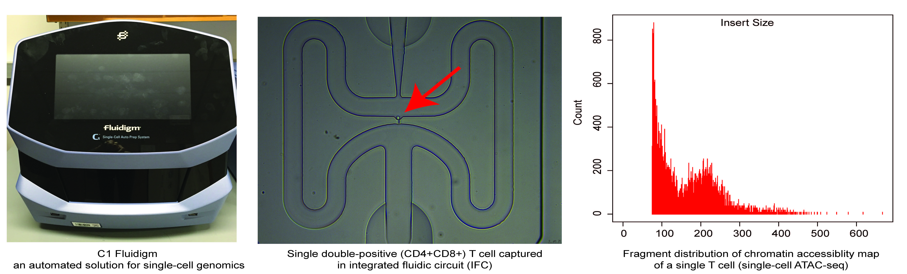

Home
 |
Assistant Professor |

Welcome
The Vahedi laboratory is multidisciplinary, integrating computational and experimental approaches to develop a single to collective cell understanding of gene regulation in immune cells in health and disease.
What do we do?
We exploit the epigenomics mapping of immune cells to understand the biological circuits that underlie immune responses and uncover the molecular basis of major inherited diseases mediated by these cells. Immune-mediated disorders such as psoriasis and type 1 diabetes result from a complex interplay of genetic and environmental factors. By mapping the epigenomic alterations associated with immune-mediated diseases, we aim to further our understanding of the role of environment in trigering autoimmunity.
Why epigenomics?
Information encoded in DNA is interpreted, modified, and propagated as chromatin. The diversity of inputs encountered by immune cells demands a matching capacity for transcriptional outcomes provided by the combinatorial and dynamic nature of epigenetic processes. Advances in genome editing and genome-wide analyses have revealed unprecedented complexity of chromatin pathways involved in the immune response, offering explanations to long-standing questions and presenting new challenges.
How do we do research?
We blend epigenomics, human genetics, immunology, and computational biology to pursue a new understanding of human immunology. We generate genome-wide maps of chromatin in relevant immune cells mostly T cells. We are interested in regulators of T cell development and also T cell engagement in autoimmune disorders such as psoriasis and type 1 diabetes. We use population-based assays with strong signal-to-noise ratios such as ChIP-seq, ATAC-seq, and RNA-seq in addition to cutting-edge single-cell assays such as single-cell (sc)ATAC-seq and scRNA-seq. As a result of our computational expertise, we also harvest the vast troves of big data that immunologists and other researchers are pouring into public repositories. Our data integrations rely on available computational pipelines. Furthermore, we develop novel computational techniques to fully understand the complexity of multidimensional epigenomics datasets in T cells.
Rotation Projects 2016-2017.
1) T cell fate and clonality inference from single-cell transcriptomes. Computational and experimental.
2) Dissecting cellular heterogeneity in T cells using single-cell chromatin accessibility maps and single-cell transcriptomics. Computational and experimental.
3) Novel tools to analyze single-cell chromatin accessibility maps (scATAC-seq). Computational.
4) Epigenomic mapping of psoriasis. Computational and experimental.
5) Epigenomic mapping of type 1 diabetes. Computational and experimental.
6) Discovery and validation of pioneer factors in immune cells. Computational and experimental.
Research Highlights
The Vahedi laboratory is equipped with an automated microfluidic solution for single-cell genomics. We are able to capture single T cells (x96) using this platform; our preliminary data support the feasibility of generating genome-scale chromatin accessibility maps (single-cell ATAC-seq) in single T cells.
|  |
You are welcome to join our weekly computational journal club on Fridays at 5pm (305 BRB).